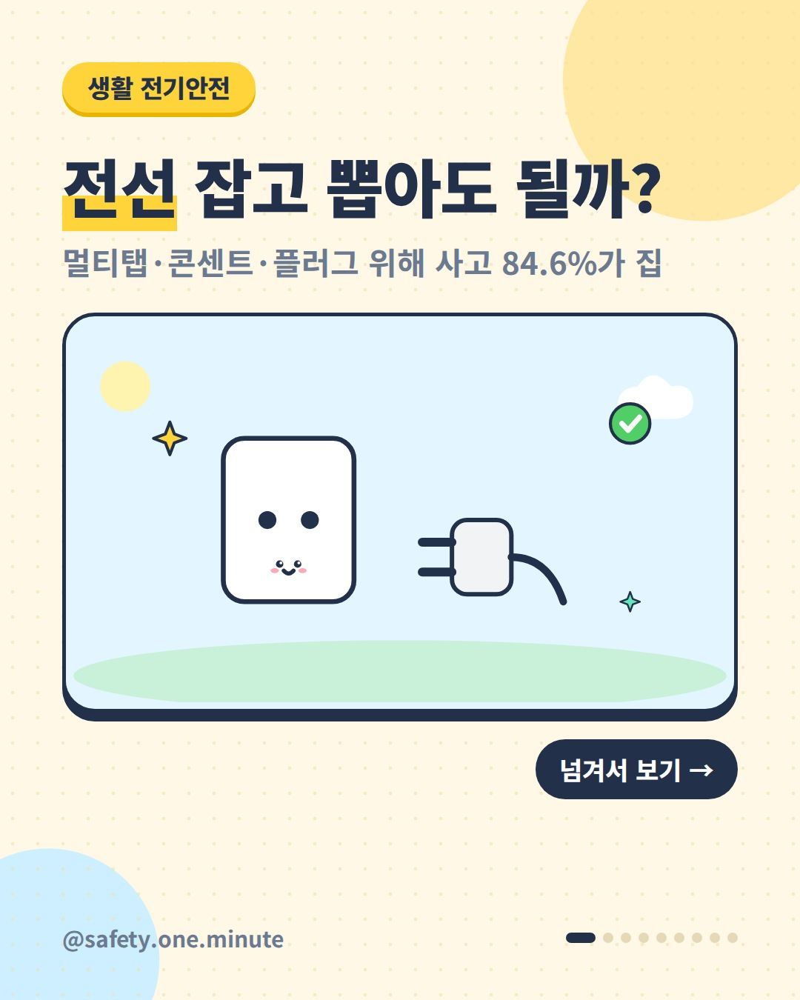
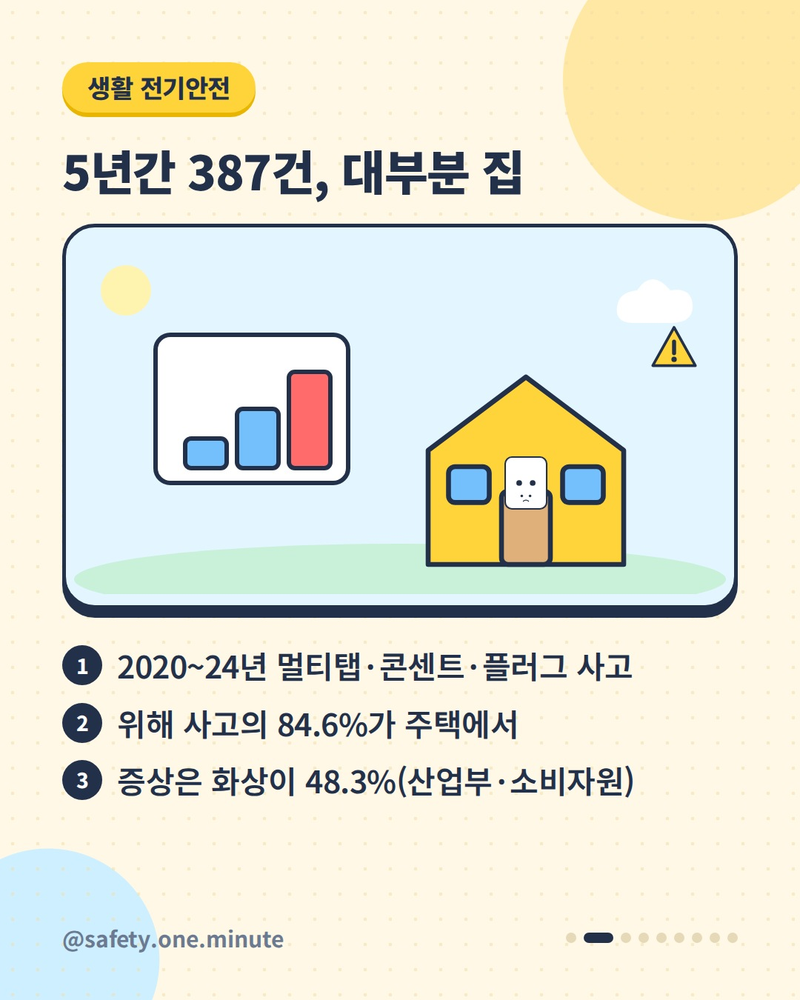
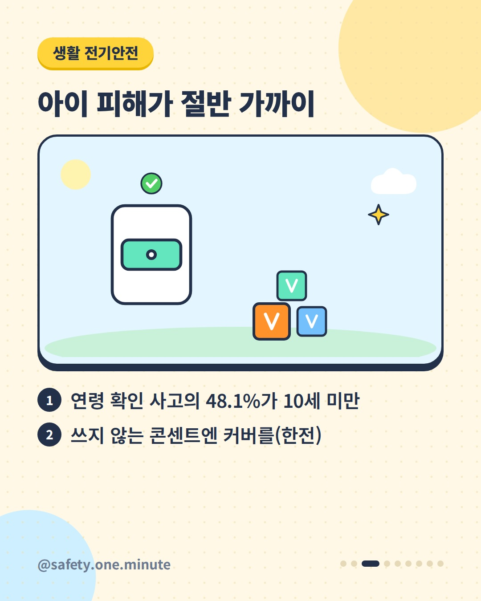
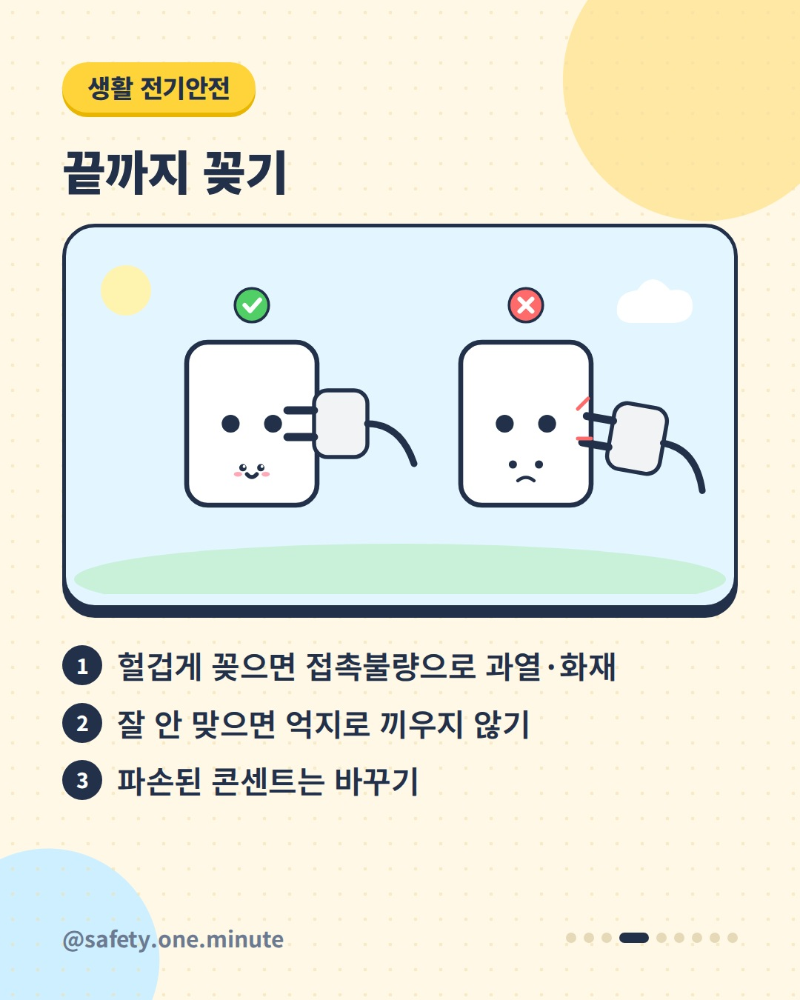
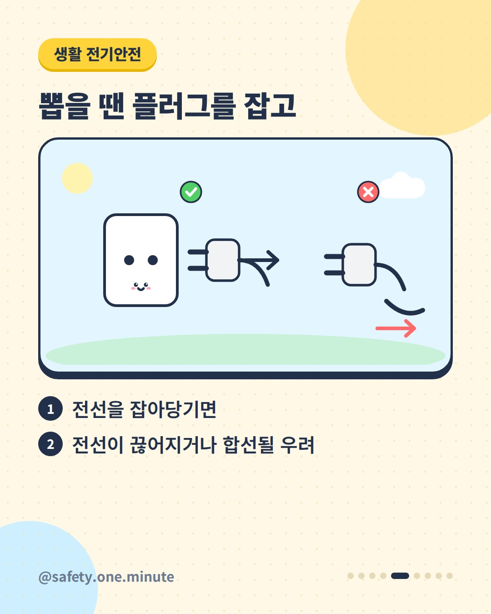
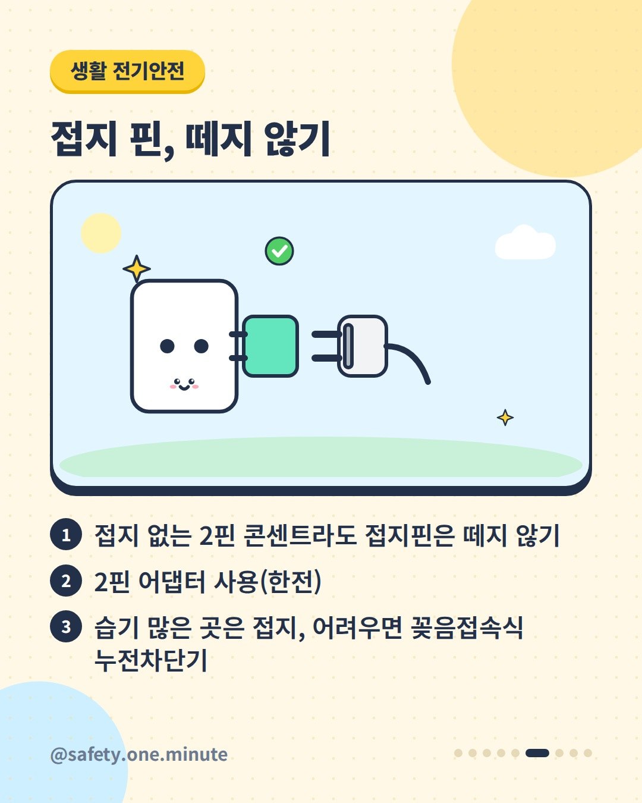
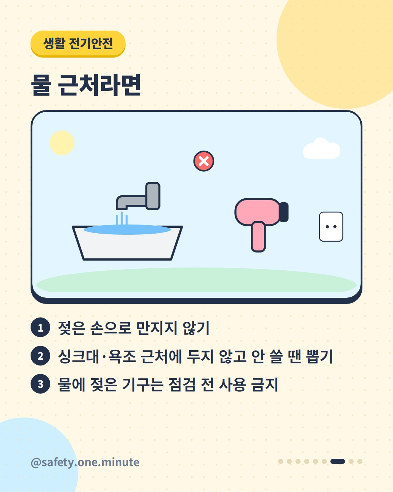
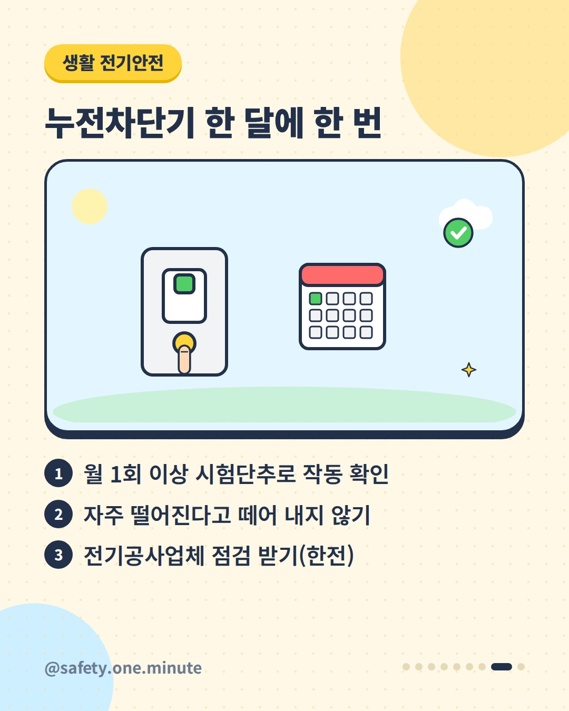
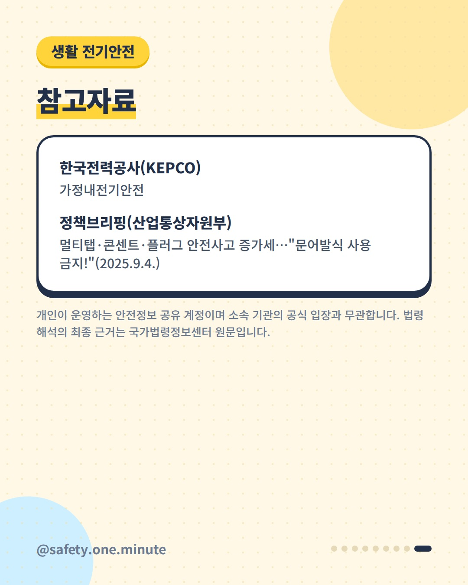

전선 잡고 뽑아도 될까? — 9장 (4:5)









캡션
플러그 뺄 때 전선을 잡고 쭉 당기시나요? 산업통상자원부·한국소비자원 등에 따르면 2020~2024년 멀티탭·콘센트·플러그 안전사고는 387건이었고, 위해 사고의 84.6%가 주택에서 일어났습니다. 증상은 화상(48.3%)이 가장 많았고, 연령이 확인된 사고의 48.1%는 10세 미만 어린이였습니다. 한국전력이 안내하는 가정 전기안전 기본기입니다. ① 플러그는 끝까지 꽂기 — 헐거우면 접촉불량으로 과열·화재 위험, 잘 안 맞으면 억지로 끼우지 않기 ② 뽑을 땐 전선이 아닌 플러그를 잡고 — 전선이 끊어지거나 합선될 우려 ③ 접지 없는 2핀 콘센트에 3핀 플러그를 쓸 때도 접지핀을 떼지 말고 2핀 어댑터 사용, 세탁기 등 습기 많은 곳 기구는 접지하고 어려우면 꽂음접속식 누전차단기 ④ 젖은 손 금지, 싱크대·욕조 근처에 두지 않기, 물에 젖은 기구는 점검 전 사용 금지 ⑤ 쓰지 않는 콘센트엔 커버, 누전차단기는 월 1회 이상 시험단추로 확인하고 자주 떨어지면 떼지 말고 전기공사업체 점검 출처: - 한국전력공사 – 가정내전기안전 - 산업통상자원부 – 멀티탭·콘센트·플러그 안전사고 주의보(2025) 개인이 운영하는 안전정보 공유 계정이며 소속 기관의 공식 입장과 무관합니다. 법령 해석의 최종 근거는 국가법령정보센터 원문입니다. #콘센트 #플러그 #생활전기안전 #누전차단기 #어린이안전 #화재예방